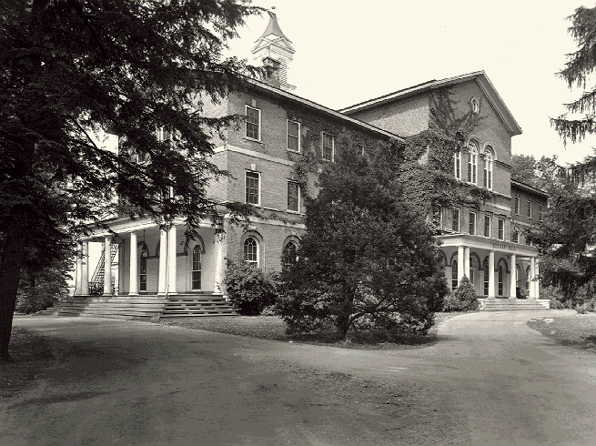
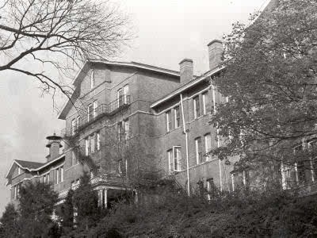
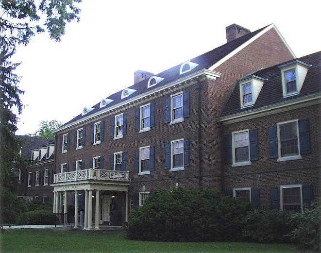
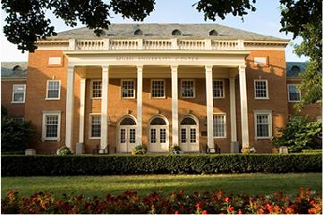
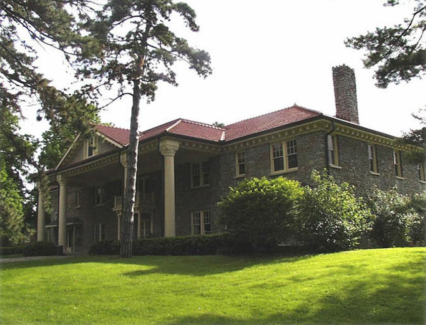

Forgotten Ohio: Miami University
Miami University in Oxford is Ohio's second-oldest liberal arts college. It was founded in 1809. Here are a few of its campus ghost legends.
Fisher Hall

A building which no longer exists, Fisher Hall stood where a new conference center stands today. It was haunted by its namesake, Judge Elam Fisher, known as the Diamond Judge because of a diamond-shaped trinket he wore around his neck. He moved a bust done of him around the off-limits upper floors in a diamond-shaped pattern, as well as in the shape of his initials, then stole it. He also stole other things, such as winches and ropes used in the building's theater. Another Fisher Hall legend (an extremely famous one at Miami) is that of Ronald Tammen, a student who disappeared from his room on April 19, 1953, leaving behind his coat on a cold night and his open books as if he were in the middle of studying. He was said to haunt the building along with the Judge. For a long time a rite of passage at Miami was to break in, but the demolition of the building put and end to that. It's said that creepy things still happen in the conference center, though.
Peabody Hall

This dorm is said to be haunted by its namesake, Mrs. Helen Peabody, who is seen there sometimes. A suicide supposedly took place in room 210, only to be repeated by another student years later. Windowshades sometimes flap violently in the rooms when there is no wind. It has a long and convoluted history, having been built in 1855 as Seminary Hall and then renamed in 1905 after Helen, who was the founder of the Western Seminary (a school which merged with MU in the 1970s). It burned twice and was rebuilt each time, in 1861 and 1871; and was remodeled again in 1974, after the college merger that made it part of Miami University.
Here is a former custodial worker's description of his mother's interaction with the ghost:
"My mother works there at the building behind Peabody. Her coworkers have made comments to her about seeing a woman walking around the building at night, and when they go to approach her telling her they are locking up, the woman disappears."
Reid Hall

Reid Hall was the site of a murder on May 9, 1959. Two students got into a fight there, and an RA named Roger Sayles tried to intervene. One pulled a gun and shot Sayles, killing him. (Some seem to think it was a beating and/or stabbing, but either way Roger Sayles was killed there.) His assailant then fled to Ogden Hall, where he blew his own brains out. Thereafter you were supposed to be able to see the bloody handprint Sayles left when he fell against the wall. Other ghostly occurrences were reported there as well, including frequent odd noises. Reid Hall was closed down sometime around 2006 and demolished, so any ghosts left from "Roger's Room" would be haunting the site, not the building itself.
Michelle was good enough to send this story about her mother's time at Miami University, living in Reid Hall:
"My mother lived in 'Rogers’s Room' back in the '70s when she was attending school there. I have heard from her and her former roommate several times that no matter how many times the maintenance staff sanded and painted the door, that hand print would always return. I was always a bit skeptical until my mother took me to Miami about five years ago on a college visit. My mother was retelling Roger’s story as we were standing outside Reid Hall, and just then the current residents of 'Roger’s Room' happened to be walking out. The two gentlemen were nice enough to let us come up and have a look. Sure enough, the hand print was still there. Despite the persistent hand print, my mother and her roommate have always maintained that they never experienced any strange activity; the young gentlemen said the same thing."
Shriver Center

Formerly University Center, this multiuse building was opened in 1957 as the first student center, mainly to accommodate the huge influx of GI Bill students. Renamed after retiring university president Philip Shriver in 1981. Currently haunted by a dark, seemingly faceless entity, particularly on the top floor. Chanda Stilts contributes this recollection of an encounter with the menacing ghost:
"I used to work for the catering department at Miami U. in the Shriver Center. I worked a lot of events in the evening hours. On the top floor of the Center, across from the catering room, there was a room called The Heritage Room. I was cleaning up after an event they had earlier in the day. I remember bringing supplies into the room to get it ready for another event the next day. All the lights were off but maybe two overheads at the doors. I had just finished and was getting ready to leave when I heard a loud bang. I turned around and saw a dark figure standing on the far end of the room. It was just standing there. Naturally, I thought it was one of the guys I worked with that loved pulling pranks on me. I yelled to it, 'Come on, it's time to go. I'm locking up.' No reaction. I took two steps toward this figure--then it just vanished. My heart skipped several beats. I hauled ass out of there, clocked out, and left."
Wilson Hall

This building was once a tuberculosis hospital, and is said to be haunted by the ghosts of those who died in it. They overturn furniture, moan, and do other ghostly things. Another haunted Wilson Hall is located at Ohio University.
MUOhio.edu
Miami University Hamilton Campus
Ghost of Peabody: Hoax or Truth?
Ohio's Haunted Colleges
Back
forgottenohio@yahoo.com
{kind=link}
{kind=link}
{kind=link}
{kind=link}
{kind=link}